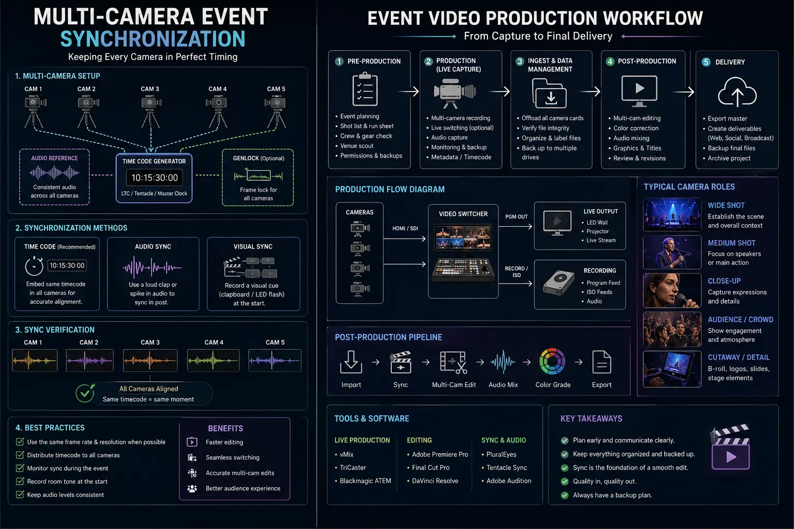
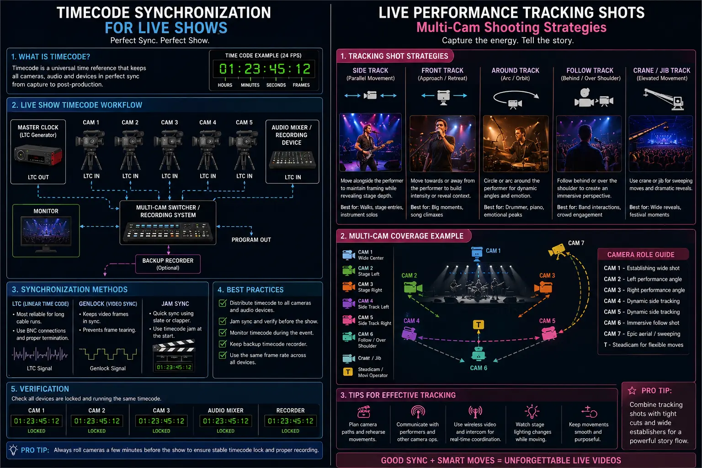

Multi-Camera Direction Tactics for High-Speed Live Events and Stage Performances
Mastering the Stage: Why Single-Camera Filming Fails High-Stakes Live Events
High-speed live events, corporate summits, flagship keynotes, and theatrical stage performances are singular, unrepeatable moments. There are no retakes, no second takes, and no pausing for a lighting adjustment. When an executive steps onto the stage or a performer delivers a peak emotional monologue, the visual director has a split second to capture the gesture, the lighting, the reaction, and the atmosphere. Single-camera coverage inevitably collapses under this pressure — forcing editors into static, distant wide shots or jarring cut-aways that destroy the cinematic momentum of the performance.
To elevate live event coverage into broadcast-quality brand assets, modern producers rely on Live Event Video Direction and structured Multi-Camera Event Synchronization. By deploying synchronized camera networks across complementary focal lengths and perspectives, directors transform unpredictable live movement into fluid, immersive visual storytelling. Whether recording a 2,000-person tech summit or an intimate executive roundtable, executing robust multi-cam shooting strategies is the definitive boundary between amateur event recording and world-class commercial production.
In the ecosystem of Creator-Led B2B Video Production, live events are no longer isolated marketing expenses; they are primary content engines. A single 45-minute keynote captured through disciplined multi-camera event filming setups yields a full-length broadcast film, interactive panel segments, and dozens of bite-sized short-form clips engineered for LinkedIn, Instagram Reels, and YouTube Shorts. However, turning live stage energy into multi-channel marketing collateral demands seamless event video production workflows, frame-accurate timecode synchronization for live shows, and kinetic live performance tracking shots that hold audience attention across every screen format.
Zero Missed Moments
Simultaneous multi-angle recording ensures every key punchline, emotional reaction, audience applause cue, and stage interaction is captured live without relying on second takes.
Instant Timeline Assembly
Implementing frame-accurate timecode synchronization for live shows allows post-production editors to sync multi-terabyte camera cards in seconds rather than hours.
Broadcast Authority & Prestige
Cutting fluidly between wide master stages, tight facial close-ups, and dynamic tracking angles establishes immediate enterprise credibility for B2B brands.
Multi-Format Content Harvesting
Comprehensive multi-cam coverage supplies high-density visual material to power 30-day vertical social media campaigns, sizzle reels, and investor presentations.

Architecting Multi-Camera Event Filming Setups for Maximum Coverage
Building effective multi-camera event filming setups requires strategic camera placement tailored to stage geometry, venue lighting, and talent mobility. Placing cameras at random intervals generates overlapping angles and visually redundant footage. A battle-tested multi-camera array relies on distinct functional roles for every camera unit on the floor:
- Camera A (Wide Master Anchor): Positioned at the dead-center front-of-house (FOH) riser. Camera A captures the full stage breadth, including overhead lighting rigs, side LED visualizers, and spatial talent positioning. It serves as the safety net for the live switcher and editor.
- Camera B (Tight Speaker Close-Up): Equipped with a heavy telephoto cinema zoom (e.g., 70-200mm or 50-1000mm broadcast lens) stationed alongside Camera A. Operator B stays locked onto the primary speaker's chest and face, framing subtle expressions, eye contact, and vocal intensity.
- Camera C (Kinetic Stage Gimbal / Steadicam): A mobile, lightweight camera operator roaming the stage perimeter or pit. Camera C delivers dynamic live performance tracking shots, low-angle talent pushes, and immersive side profile views that place the viewer directly on stage with the performer.
- Camera D (Crowd Reaction & Atmospheric Reverse): Positioned on a side elevation or shoulder rig facing the audience. Camera D captures real-time crowd reactions, laughter, applause, note-taking, and lighting sweeps that establish room scale and audience energy.
Precision Synchronization: Timecode Generators and Wireless Audio Integration
The greatest bottleneck in traditional multi-cam post-production is clip alignment. When 4 to 8 cameras record continuously for several hours alongside multi-track sound boards, attempting manual audio waveform sync in editing software leads to timeline drift, misaligned cuts, and lost billable hours. Professional event video production workflows solve this through hardware-level temporal locking.
Executing precise timecode synchronization for live shows requires mounting dedicated wireless timecode generators (such as Tentacle Sync E, Ambient Lockit, or UltraSync ONE) onto every camera body and audio recorder. Prior to showtime, all units are cross-jammed via Bluetooth or 5-pin LEMO cables to share a single master SMPTE timecode clock. Because every single video frame recorded by Camera A, B, C, and D is stamped with identical temporal data, non-linear editing (NLE) platforms like DaVinci Resolve and Premiere Pro can instantly auto-generate multi-camera source sequences with a single click.
Furthermore, Multi-Camera Event Synchronization demands pristine audio routing. Wireless lavalier or handheld microphones from the stage sound board must be split directly into camera line inputs as scratch tracks while simultaneously recording 32-bit float multi-track master files. This redundant audio workflow guarantees frame-accurate sound alignment even during sudden dynamic volume spikes or live wireless signal dropouts.
Keynote & Summit Strategy
- Anchor Positioning: Center FOH master wide paired with telephoto close-up tight track.
- Screen Integration: Direct slide-grab recording via HDMI/SDI splitters for instant PiP graphics.
- Director Cue: Switch to tight close-ups during key strategic statements and product reveals.
High-Speed Stage Performance
- Kinetic Tracking: Steadicam and stage-edge slider capturing high-speed movement.
- Dynamic ISO Rigs: Fast prime lenses (f/1.4 - f/2.0) matching rapid dramatic stage lighting shifts.
- Director Cue: Rapid cutting between tracking pushes and wide lighting sweeps on musical beats.
Interactive Panel & Q&A
- Cross-Shot Pairing: Two tight cameras cross-shooting panelists for instantaneous dialogue cuts.
- Roamer Mic Tracker: Mobile crowd camera following audience Q&A mics across aisles.
- Director Cue: Hold medium wide group shots during spontaneous multi-speaker debates.

Director Communication Protocols and Live Switcher Command Tactics
Without disciplined communication, a four-camera crew operates as four isolated individuals. Flawless Live Event Video Direction relies on clear, low-latency intercom systems (such as Hollyland Solidcom or Riedel Bolero) connecting the live director, technical director (switcher), and camera operators.
To prevent the common pitfall where two camera operators pan or adjust focus simultaneously, the live director enforces strict comms protocols:
- Pre-Framing Commands: "Cam 2, prep a tight push on the speaker's hands. Cam 3, hold static wide. Cutting to Cam 3 in 3, 2, 1... Take Cam 3."
- Tally Light Discipline: Wireless tally indicators mounted on camera viewfinders inform operators when their feed is live (Red) versus preview (Green), signaling when they can safely adjust focus or zoom.
- Movement Coordination: Mobile operators executing live performance tracking shots announce their stage passes over comms so static operators can adjust their depth-of-field without framing the mobile crew in their primary shot.
Maximizing ROI: Repurposing Live Coverage for Creator-Led B2B Video Production
In modern enterprise marketing, capturing a live event is only half the battle; the true return on investment lies in content velocity. Creator-Led B2B Video Production leverages live multi-camera footage to build omni-channel brand presence across digital ecosystems.
Because multi-camera setups capture every angle of a keynote simultaneously, post-production teams can slice a 60-minute presentation into multiple distinct asset tiers:
- Full-Length Executive Keynotes: Published on YouTube and corporate websites as high-authority educational webinars and thought leadership mainstays.
- Vertical Social Media Clips (9:16): Sliced into high-engagement shorts for LinkedIn, Instagram Reels, and TikTok. Cutting between tight speaker reactions, audience applause, and stage tracking angles creates fast visual rhythm and prevents scroll-dropoff.
- Cinematic Brand Sizzle Reels: Combining high-speed live performance tracking shots, slow-motion crowd moments, and sound bites into 90-second promotional trailers for upcoming annual conferences.
Executing End-to-End Event Video Production Workflows
Achieving consistent broadcast quality requires a systematic workflow spanning pre-production, live execution, and post-production ingest. Here is the step-by-step framework followed by elite video teams:
- Pre-Event Technical Audit: Inspect venue power distribution, measure stage lux levels, map camera riser locations, and establish SDI/HDMI cable runs or zero-latency wireless transmission paths.
- Timecode & Color Calibration: Match picture profiles (S-Log3, C-Log, or V-Log) across all camera sensors and lock color temperature settings across all bodies before rehearsal.
- Live ISO Multi-Deck Recording: Record dedicated clean ISO feeds for every camera onto high-speed NVMe media, alongside a live switched program mix for rapid client review.
- Multi-Cam Post-Production Ingest: Import timecode-synced camera cards, apply master LUT color passes, map multi-track stage audio, and execute multi-cam timeline cuts using customized keyboard shortcuts.
Conclusion
Mastering Live Event Video Direction and Multi-Camera Event Synchronization is the key to transforming unpredictable live stage events into polished, high-impact brand collateral. By deploying structured multi-camera event filming setups, frame-accurate timecode synchronization for live shows, and kinetic live performance tracking shots, production teams capture every nuance of stage energy without compromise.
Adopting strategic multi-cam shooting strategies inside modern event video production workflows provides the foundation for scalable Creator-Led B2B Video Production. When your brand's live keynotes, product debuts, and summits are direct-edited with broadcast-level precision, every performance continues to generate trust, engagement, and revenue long after the stage lights go down.
At The PhD Ads in Madurai, we specialize in high-end live event videography, multi-camera switching, timecode workflow engineering, and B2B video strategy. Contact our team to turn your next live stage performance into a cinematic authority asset.
Key Topics
Ready to Capture Broadcast-Quality Multi-Cam Live Event Production?
At The PhD Ads in Madurai, we specialize in Creator-Led B2B Video Production, Multi-Camera Event Synchronization, Live Event Video Direction, and high-impact event video production workflows. Let us help you capture your next keynote or stage performance with broadcast precision.
Email: team@e2o.in